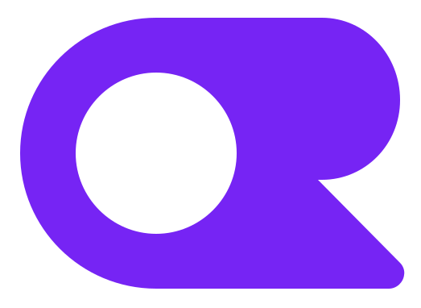

Progress Tracker
Designed customer touchpoints that made product
authenticity and order visibility easier to understand.
Customer, operational, and AI-assisted systems measured by what changed for customers and the business.
Customer touchpoints across Search, Detail Pages, Progress Tracker, and Amazon Lens contributed to a 2% increase in purchase rates and 6% fewer returns for enrolled products.*
*For brands and products enrolled in the Transparency program.

Connected customer recovery, investigator decision support, and structured data across a high-stakes risk system.
Reduced friction across a fragmented appraisal workflow with reviewable automation, decision support, and report-ready output.

An academic redesign focused on navigation, hierarchy, and clarity.

Designing AI products from interaction and structured outputs through model routing, data flows, and working prototypes.
Model-enabled product concepts, structured outputs, and working interaction prototypes.
Moves from product idea to working prototype quickly using v0, Copilot, and other AI coding tools.
Prototypes AI workflows, summaries, structured outputs, and product features across model providers.
Shapes structured model output around product and interface requirements.
Tests model routing, generate and stream patterns, and provider-flexible workflows with OpenRouter, Gemini, and AI SDK.
Implementation fluency for building, connecting, and deploying product prototypes.
Builds component-based product prototypes with routes, APIs, and deployable interfaces.
Builds interactive product behavior and works in modern typed codebases.
Translates product and visual decisions into responsive, polished interfaces.
Connects prototypes to services, authentication, structured data, Postgres, and file storage.
Builds and tests cross-platform concepts with React Native, Expo, Ionic, native-adjacent tools, and push notification patterns.
Uses Apify, Playwright, cron jobs, and RSS/XML ingestion for extraction, testing, and scheduled processing.
Works in GitHub and VS Code, then deploys through Vercel or Railway with environment and domain configuration.
Product craft, reusable interface systems, and evidence-led evaluation.
Designs and tests product flows, interaction models, and working prototypes across Figma, Axure, and Sketch.
Creates reusable components, variables, tokens, and implementation-ready patterns using Tailwind, MUI, shadcn/ui, Bootstrap, and Pico.css.
Uses research and testing workflows to evaluate product behavior and comprehension.
Supports survey-based research and structured feedback workflows.
Uses specialized behavioral research to assess attention and interface comprehension.
Produces brand, layout, image, presentation, and supporting design assets.
Builds polished marketing and portfolio experiences without heavy engineering overhead.
Products and experiments connecting interface decisions to models, APIs, structured data, and deployment.

OpenRouterAI-assisted news aggregation that pulls from diverse sources, generates concise summaries, and highlights patterns across coverage.
A public food-safety tracker that combines federal recall and outbreak data into a simple answer: what should I avoid buying or eating today?
A satirical territory game built around a fully interactive White House map, persistent room ownership, escalating purchase prices, and player-selected room themes.
A cross-platform desktop plugin for tracking Codex usage and reset limits, published in the official OpenAI Plugins marketplace.
A pattern-based flashcard tool for designers exploring how AI changes product behavior, interaction models, and interface decisions.
A document automation prototype exploring how AI can help parse, clean, transform, and reuse PDF-based content across structured workflows.
A Chrome extension prototype that detects and hides floating AI/chatbot widgets across websites, reducing interface clutter and restoring focus.
A job application assistant that finds relevant roles, tailors application materials, and shows transparent evidence of what was submitted.
A Codex plugin for searching project files with familiar controls for case sensitivity, whole-word matching, and regular expressions.
A browser extension concept for searching, organizing, and resurfacing past ChatGPT conversations more easily from inside the browser.
Experience across enterprise platforms, startups, education, and patented product work.
Graphical excellence is that which gives to the viewer the greatest number of ideas in the shortest time with the least ink in the smallest space.
Edward Tufte